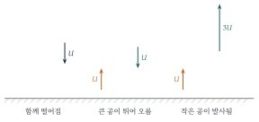

STEP II 2010, 문제 10
계속 읽기 전에 문제를 먼저 읽어 보자. 문제는 STEP Support Programme의 문제 데이터베이스에 있다: step.maths.org/questions/10-s2-q10
도입
농구공 위에 테니스공을 올려놓고 함께 떨어뜨려 보자. 농구공이 바닥에서 튀어 오르면, 테니스공은 떨어뜨린 높이의 몇 배나 되는 높이로 솟구치며, 때로는 천장에 닿을 만큼 높이 올라간다. 실외에서 해 보기 바란다.
문제의 소문항 (i)은 한 번의 충돌(collision)에는 속도의 한계가 있음을 보여 준다. 즉 부딪히는 공이 아무리 무거워도, 정지해 있는 공을 들어오는 공의 속력의 두 배보다 빠르게 내보낼 수는 없다. 소문항 (ii)는 이 한계를 깨는 방법을 보여 준다. 점점 더 가벼워지는 공들의 사슬을 따라 운동을 전달하면, 단계마다 속력이 곱절로 불어난다. 같은 아이디어로 우주 탐사선을 외행성까지 보내며, 이것은 초신성(supernova)의 메커니즘의 일부로 제안되기도 했다.
시작하기 전에
10.1 절에서: 속력 \(u\)로 움직이는 질량 \(M\)이 정지해 있는 질량 \(m\)과 탄성 충돌(elastic collision)하면, 충돌 후 \(m\)의 속력은 얼마인가?
그곳의 결과(두 질량의 역할을 바꾼 것)에 따르면 부딪힌 입자의 속력은 \(\frac{2M}{M + m}u\)이다. 다르게 기억하는 방법도 있다. 탄성 충돌에서는 상대 속도(relative velocity)가 반대로 뒤집힌다. 무거운 공이 거의 느려지지 않는다면, 가벼운 공은 무거운 공의 속력보다 약 \(u\)만큼 더 빠르게, 즉 약 \(2u\)로 떠나야 한다.
차근차근 풀기
단계 1 속력의 한계
\(M = bm\)이면, 충돌 후 \(A\)의 속력은 \[v_A = \frac{2bm}{bm + m}\,u = \frac{2b}{b + 1}\,u.\] 이다.
\(\frac{2b}{b+1}\)는 \(2\)와 비교하여 어떠한가? \(b \to \infty\)이면 어떻게 되는가?
모든 \(b\)에 대하여 \(\frac{2b}{b + 1} = 2 - \frac{2}{b + 1} < 2\)이므로, \(B\)가 아무리 무거워도 \(A\)의 속력은 항상 \(2u\)보다 작다. \(b \to \infty\)이면 이 속력은 \(2u\)에 가까워진다. 무한히 무거운 공은 마치 움직이는 벽처럼 \(A\)를 튕겨 낼 것이다.■
단계 2 사슬을 따라 전달하기
소문항 (ii)에서 각 입자는 다음 입자보다 \(\lambda\)배 무겁다. 소문항 (i)은 사슬 속의 각 충돌에 대하여 무엇을 말해 주는가?
\(B_1\)(질량 \(\lambda^n m\))이 \(\lambda\)배 가벼운 \(B_2\)(질량 \(\lambda^{n-1}m\))에 부딪힌다. \(b = \lambda\)로 두고 소문항 (i)을 적용하면, \(B_2\)는 \(\frac{2\lambda}{\lambda + 1}u\)로 움직이기 시작한다. 다음으로 \(B_2\)가 다시 \(\lambda\)배 가벼운 \(B_3\)에 부딪히고, \(B_3\)은 \(\bigl(\frac{2\lambda}{\lambda + 1}\bigr)^2u\)로 움직이기 시작한다. 이러한 충돌이 \(n\)번 일어난 뒤, 즉 마지막으로 \(B_n\)이 \(A\)에 부딪힌 뒤에는 \[v_A = \Bigl(\frac{2\lambda}{\lambda + 1}\Bigr)^nu.\] 이다. (이후 \(B\)들 사이에서 일어나는 충돌은 \(A\)를 더 밀어 줄 수만 있을 뿐 느리게 할 수는 없다. 앞쪽에서 \(A\)에 부딪히는 것은 아무것도 없기 때문이다.)
\(\frac{2\lambda}{\lambda + 1}\)는 \(1\)보다 큰가, 작은가?
\(\lambda > 1\)이므로 \(2\lambda > \lambda + 1\)이고, 따라서 비 \(r = \frac{2\lambda}{\lambda + 1}\)는 \(1\)보다 크며, \(n \to \infty\)일 때 \(r^n \to \infty\)이다. 그러므로 \(n\)을 충분히 크게 잡으면 \(A\)를 원하는 만큼 빠르게 움직이게 할 수 있다.■
단계 3 스무 배 빠르게
\(\lambda = 4\)이면 \(r = \frac85 = 1.6\)이고, \(1.6^n > 20\)이어야 한다. 밑이 \(10\)인 로그(logarithm)를 취하면 \[\log_{10}1.6 = \log_{10}16 - 1 = 4\log_{10}2 - 1 \approx 0.20412, \qquad \log_{10}20 = 1 + \log_{10}2 \approx 1.30103,\] 이므로 \(n > \frac{1.30103}{0.20412} \approx 6.37\)이어야 한다. 가장 작은 값은 \(n = 7\)이다. (실제로 \(1.6^6 \approx 16.8\)이고 \(1.6^7 \approx 26.8\)이다.)■
돌아보기
하나의 결과를 반복 적용하기. 소문항 (i)을 소문항 (ii)에서 \(n\)번 사용하여, 유계인 이득을 유계가 아닌 이득으로 바꾸었다.
결코 도달하지 않는 극한. 상계 \(2u\)에는 가까워지기만 할 뿐 도달하지 않으므로, 올바른 명제는 등호가 없는 부등식(strict inequality)이다.
로그는 거듭제곱을 곱으로 바꾼다. 몇 단계가 필요한가 하는 질문이 나눗셈 하나로 바뀌었다.
숨은 수학
농구공과 테니스공
두 공이 높이 \(H\)에서 함께 떨어져 속력 \(U = \sqrt{2gH}\)로 바닥에 닿는다고 하자. 모든 것이 완전 탄성이고 농구공이 훨씬 더 무겁다고 가정한다. 농구공은 바닥에서 위쪽으로 속력 \(U\)로 튀어 오르고, 곧바로 여전히 속력 \(U\)로 내려오고 있는 테니스공과 만난다. 농구공의 기준틀(frame of reference)에서 보면 테니스공은 \(2U\)로 다가오고, 매우 무거운 물체에 튕겨 \(2U\)로 떠난다. 다시 지면의 기준틀로 돌아오면 이는 위쪽으로 \(2U + U = 3U\)이다(그림 10.2.1). 올라가는 높이는 발사 속력의 제곱에 비례하므로, 테니스공은 \(9H\)까지 올라간다.
실제 공은 완전 탄성이 아니다. 반발 계수(coefficient of restitution)가 \(e\)이고 질량비가 \(M/m\)이면, 테니스공은 속력 \(\frac{Me(2 + e) - m}{M + m}U\)로 떠난다. 연습문제에 있는 STEP I 2014 Q10은 측정한 높이로부터 거꾸로 질량비를 구한다.

중력 새총 효과
행성 곁을 지나가는 우주 탐사선은 행성에 닿지 않지만, 중력은 매우 무거운 물체와의 아주 부드러운 탄성 충돌처럼 작용한다. 행성의 기준틀에서 탐사선은 행성 주위를 돌아 들어올 때와 같은 속력으로 떠난다. 행성이 속력 \(V\)로 탐사선을 향해 움직이고 있다면, 태양의 기준틀에서 탐사선은 테니스공과 꼭 마찬가지로 최대 \(2V\)만큼 속력을 얻을 수 있다. 1977년에 발사된 두 보이저(Voyager) 탐사선은 드물게 찾아온 외행성들의 정렬을 이용하여 목성에서 토성으로(보이저 2호는 다시 천왕성과 해왕성으로) 나아갔고, 만날 때마다 속력을 얻었다. 이러한 중력 도움(gravity assist)이 없었다면 해왕성까지의 여정은 12년이 아니라 약 30년이 걸렸을 것이다. 에너지는 행성에서 오며, 행성은 측정할 수 없을 만큼 아주 조금 느려진다.
1968년 W. R. Mellen은 American Journal of Physics에서 크기가 점점 작아지는 공 여러 개를 쌓아 만든 “슈퍼볼 반동 발사체”를 소개하고, 맨 위의 공이 충돌 속력의 몇 배나 되는 속력으로 발사될 수 있음을 지적하였다. 천체물리학자들은 이것이 핵붕괴 초신성(core-collapse supernova)과 대략적으로 닮았다고 지적해 왔다. 별의 바깥층이 안쪽으로 떨어지다가 단단하고 밀도 높은 중심핵에 부딪혀 되튀고, 충격파(shock wave)가 운동량(momentum)을 점점 밀도가 낮아지는 물질 속으로 바깥쪽으로 실어 날라 그 물질을 엄청난 속력으로 가속한다. 쌓인 공 효과의 시연은 학생들에게 이 아이디어를 설명하는 데 쓰이지만, 실제 초신성에는 튀는 공보다 훨씬 많은 물리학이 관여하며, 중성미자(neutrino)도 그중 하나이다.
사고 기술
어떤 과정이 하나의 간단한 단계를 되풀이하는 것이라면, 그 단계를 한 번 풀고 그것을 합성하라.
단계마다의 이득 배율이 \(2\)보다 작더라도, 배율들이 곱해지므로 여러 단계를 거치면 유계가 아니게 된다. 대학에서는 이것이 전달 행렬(transfer matrix), 다단 증폭기, 다단 로켓(10.3 절) 뒤에 있는 아이디어이다. 사슬 전체의 이득은 각 고리의 이득의 곱이다.
더 도전하기
실제 상황. STEP I 2014, 문제 10을 풀어 보자. 실제 수치와 불완전한 튕김을 다루는 쌓인 공 문제이다.
비탄성 사슬. STEP I 2017, 문제 10을 풀어 보자. 질량이 등비수열로 커지는 입자들의 사슬을 따라 충돌을 전달하는 문제이다. 각 입자가 정확히 두 번의 충돌에 관여하는 것은 언제인가?
공 세 개. 완전 탄성인 공 세 개를 쌓되, 각 공은 그 아래의 공보다 훨씬 가볍다. 맨 위의 공이 \(7U\)로 떠나 \(49H\)까지 올라감을 보여라. 공이 \(k\)개이면 맨 위의 공이 \((2^k - 1)U\)로 떠남을 보여라.
에너지는 어디에서 오는가? 소문항 (ii)에서 \(A\)의 속력은 유계가 아니지만 전체 운동 에너지(kinetic energy)는 보존됨을 보여라. 무거운 입자들은 어떻게 되는가?
더 읽을거리
David Morin, Introduction to Classical Mechanics (Cambridge University Press), 쌓인 공 문제가 실린 5장.
W. R. Mellen, “Superball rebound projectiles”, American Journal of Physics 36 (1968). 짧고 재미있다.
Gary Flandro, “Fast reconnaissance missions to the outer solar system utilizing energy derived from the gravitational field of Jupiter”, Astronautica Acta 12 (1966). 보이저의 “그랜드 투어”를 제안한 논문이다.